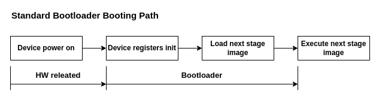
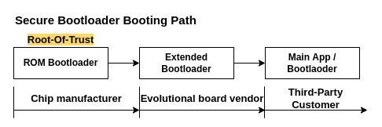
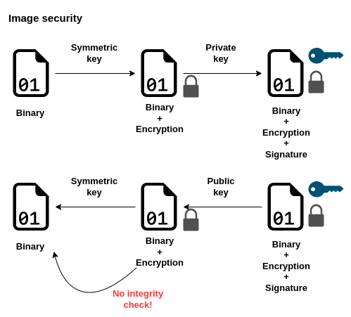
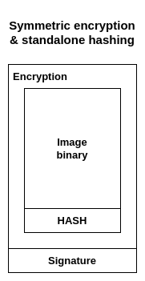
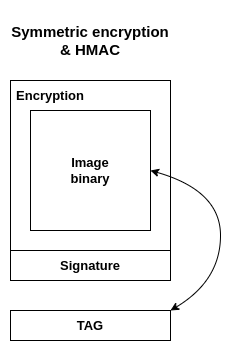
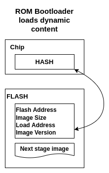
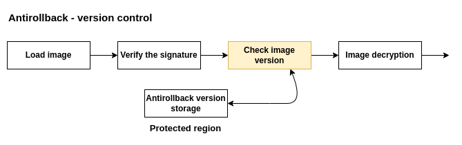
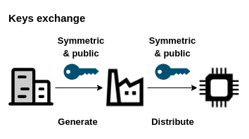
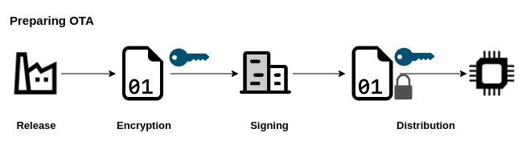
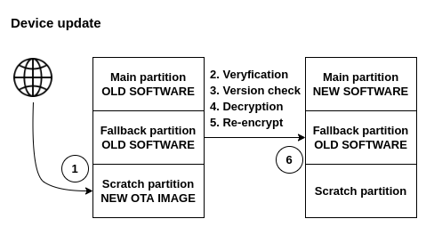

Secure boot concept in IoT devices
Introduction
Software security is rather a huge topic that has many rabbit holes. When it comes to IoT devices, that interacts with the network, the level of security difficulties rapidly increases. When not only the software can be damaged due to the potential attack, but also the device itself can be stolen and reused, the security layer must be even stronger than normally.
In this article, I am willing to describe the basic concept about secure boot. We are going to get familiar with secure booting path mechanism, Over-The-Air safe device update and discuss basic attacks mitigation that secure boot should implement.
The standard bootloader
Before we jump straight to elaborating about security, we should answer to one important question. What actually bootloader is and what value does it bring to the device?
The first thing that should come to our mind is that the bootloader boots the main application on our device, after this we can define that the bootloader is the first piece of software that runs after the device is turned on. These two statements gives the overall picture of the situation.
The bootloader also should allow updating the application that normally runs on the device. Often standard interfaces that are present on the chip are utilized: UART, I2C, SPI, USB. Bootloaders that are supplied are often quite small (1 KB - 4 KB), and their execution time is counted in milliseconds. They have two simple jobs that they need to fulfill - initialize the device for program execution and execute the native application.

The secure bootloader
When we stated what standard bootloader implements and what are their characteristics, we can finally say few words about secure bootloader. To start with, we bullet point what features it includes.
All features that standard bootloader do:
- initialize the system,
- load the main app to the executable memory region,
- allows to perform self-update,
- allows to perform main app update,
Secure bootloader extends features to:
- implementing secure booting path,
- adds security when performing Over-The-Air (OTA) software updated:
- ensure safe data authentication
- data integrity check
- safe software replacement
- prepares the device for productization:
- prevents the device from insecure configuration
- gives possibility for authorized access in case of the Return Merchandiser Authorization (RMA).
To summarize with one statement what secure bootloader is we can state that…
Secure bootloader ensure that the software run on the device is authenticated and verified.
Secure booting path
The booting sequence of the device should not be connected only with one stage. Device that is being designed for multi vendors should give wide area to implement own business logic and security strategy. It is impossible without dividing the device booting procedure into smaller stages that are implemented by the next customer.

ROM Bootloader
The first booting stage starts in “ROM Bootloader”. This piece of software residue in the Read Only Memory in the chip itself and is impossible to change after the chip is manufactured. This means that no future updated is possible. Furthermore, having physically immutable software makes it incredibly hard for a potential attacker to change the code and insert different, malicious, software. This stage of the booting path is supplied by the chip vendor – usually is certified together with the chip itself. ROM Bootloader probably would not implement any necessary functionality that is requested from us, and is very, very primitive. It has one simple job – securely verify the next stage image and run it. On-chip bootloaders are very limited even in terms of selecting the image from which to boot the device, therefore we should implement such features in the next booting stage.
Root-Of-Trust
Before we go further, we should emphasize that our ROM Bootloader is the “Root-Of-Trust” in our whole cryptographic system. This means, since it is an immutable piece of software, we are laying on it our entire trust that it will not behave malicious at any point.
Extended Bootloader
Because our ROM Bootloader is very primitive and would not implement any needed feature from our customer, we need to implement it by ourselves. This means, we have need for Extended Bootloader that is going to be authenticated by the previous stage and would implement all the necessary functionalities. This stage of the secure booting path is often supplied by the evolutional board vendor, on which third-party customers create their targeted devices. Extended bootloader implements all the necessary features that are needed in the system, prepares the device for running the next software image and authenticate the next stage. This is the first possibility to apply OTA mechanisms and fully control the device, so it is important to protect the extended bootloader from tampering and leaking the used instructions outside the device.
End of the booting path
The third stage of booting can supply another bootloader, or the main app. The recipient of our evolutional board has free field to implement his own strategy.
Permission dropping
Talking about booting stages leads us to the first security mechanism that the secure bootloader should add up to protect the device. After every stage of the booting path, the customers has bigger freedom to implement his own device behavior. Such possibility implies also potential vulnerabilities in e.g. accessing protected regions of the system -getting access to the stored secret keys and the mistekly dumping them on UART interface. Each stage of the bootloader should protect critical data that are used for authentication. Not only authentication content is the target of attacks, but also interfaces that gives attacker possibility to inject malicious code or use the to read internal state of the CPU and memory registers.
Such simple implementation of the permission dropping mechanism can force the hardware to:
- block JTAG interface,
- disallow read or write access to One-Time-Programmable (OTP) registers/FLASH/RAM,
- disable chip interfaces (UART/SPI/I2C) etc.
Disabling access to the regions should be possible to perform in one-way, this means that after dropped permission in previous booting stage no possibility to undo the operation in higher level of the software.
Security in the secure booting path
The most critical mechanism that we should take under consideration and understand the concept is preparing secure images. Having the possibility to accelerate cryptograophic operation by hardware is a huge help during authenticating the image. This not only speeds up the entire process, but also adds another layer of security to the overall system.
Before we start explaining how the device is validating the loaded image, we have to assume, that the device contain symmetric key used for encryption, and public key to verify the signature.

Encryption and signature
The software is compiled and is ready to be executed on the device. The first case that we have to take care of is ensuring that after the binary get to the wrong hands, no one will be able to disassemble it and read the content that the binary file contains. Here we are utilizing the symmetric cryptography and by using symmetric key we are encrypting the binary file.
The next problem is ensuring that the data comes from trusted source, it can be done by signing the binary file. Here we are taking a helping hand from asymmetric cryptography and generate a hash of the file which is later encrypted with the private key – this is the signature that is attached to the encrypted file.
The device can use public key to decrypt the encrypted hash and check if the binary file is still the same as at the moment when it has been signed.

Integrity check after decryption
The first security gap occurs when decrypting the image. During binary decryption the attacker can try to replace the file, even more, after decryption we are losing the authentication because the image is no longer the same version that has been used while signing.
The problem can be solved in few ways. The first solution is to attach the raw hash to the original binary right before it gets encrypted. During data encryption, we take binary data and the generated hash. Then, after the device decipher the image, the deciphered content can be checked with the stored hash. The disadvantage of such idea is adding extra step of validation that opens new potential attack vectors. Another cryptographic operation extends the booting time, what is not a good sign for the bootloader’s performance.

The difficulties can be overcome by using the hybrid algorithms. We can use HMAC to generate tag in the same time when the binary is encrypted/decrypted. This algorithm can be easily implemented in hardware, so our overall speed and code size would be optimized. The device should reencrypt the binary on the device with new generated keys that have not been used before, this improves the security aspect and mitigate the potential symmetric key leakage. During reencryption the device can store the generated tag, so later during boot it can be rechecked.
ROM Bootloader authenticate next stage
At the beginning, we have hardly stated – ROM Bootloader is immutable – so how we can instruct it to load and authenticate dynamic content?
This can be solved in the following ways:
- fixed address in FLASH with constant size of the next stage image,
- configuration registers inside the chip that configure the ROM Bootloader,
- fixed address in FLASH that stores meta header with next stage image information,
- One-TIme-Programmable (OTP) registers.
Using fixed address in our FLASH memory and limiting the software size does not sound like a good idea for the potential customers. Soon there are going to arise problems where we need to relocate the piece of software or even extend it more, but our ROM Bootloader would not have such possibility anymore. We can try to solve the problem by using special, dedicated registers, that are going to instruct the ROM Bootloader, where to look for the next image and what size the binary is. It is a better idea, but it would be very time-consuming accessing internal registers of the chip during manufacturing…
The easiest way would be to write to the flash some information about the next stage of booting and stores such frame in fixed position. Then, after the ROM Bootloader starts, it would seek information about the incoming image in the FLASH memory. Brilliant idea, unfortunately everyone can write to the FLASH memory, especially when it is external chip. Here comes time for the cryptographic, our device can utilize the OTP registers! At the first boot (during manufacturing stage), the device can generate a signed HASH of the meta frame stored in the FLASH, then store it into the OTP register. Now, after every boot, the ROM bootloader, before it takes information from the meta frame, it would reevaluate the signed HASH and check it with the stored version. Such mechanism, would secure the meta frame stored in the FLASH memory. The used algorithm to generate signed hash can be HMAC.

Meta frame stored in FLASH should contain:
- image address,
- image size,
- image execution load address,
- version of the image.
Antirollback
It might sound at the beginning quite strange, but also software that comes from verified source can be potentially big security risk for our entire system.
Imagine, that our factory produced software and versioned it with version number 3. Our device contains the software and are using this version to operate. Now it happens, our security engineers found potential big security gap in the software. Our developers fix the problem and produce new software versioned with version number 4. We are sending new version of the software to the devices to update them and fix vulnerabilities. Devices update everything is fine. The issue comes when potential attackers found out, that the previous version of the software has vulnerabilities that can be used to take control over the device. The only way, of protecting the device from such attack is to ban old versions of the software.
The scenario describes the need of having antirollback mechanism in our bootloader. After the device verify that the image come from trusted source, the version of the image must be compared to the version counter stored inside the device. The version counter store the latest version of the image that has been successfully executed on the device in the past. In case of trying to load an older version of the image, the device calls exception. When the image version is equal or greater, the bootloader decipher the image and jumps to the target image.

It is important to decipher the image after the version check, because in case of failure, we are ending up with ready to lunch image in the internal memory. When this scenario happens, the attacker have many possibilities to trick the CPU to jump to the not secure version of the image.
The antirollback counter can be stored in singed memory region or in OTP registers. The counter needs the possibility to only increments, it would extra bonus if the decrement option would be blocked by hardware. The decrement can be blocked by burning bits and damaging the memory regions, so the operations of unsetting the bit is irreversible.
OTA
At the beginning have been said, that secure bootloader should allow safe image update. To achieve the functionality, many concepts can be described. This article is going to present a scenario where special trust-agency is going to take care about our secure keys. The trust-agency is responsible for key generation and signing the data. This adds another layer of security when managing secret keys by the factory. The described concept would also assume that the OTA binaries are going to use special keys for this functionality not connected with the secure booting path.
Keys exchange
The process starts with exchanging the keys between trust-agnecy and manufacturer. The manufacturer request generation of:
- symmetric key – for OTA image encryption,
- a pair of private and public key for the feature OTA image signature.
The symmetric key and public key is send to the manufacturer, where it is latter embedded into the device – this prepares the device for authentication and decryption of the OTA image.

Preparing OTA image
The manufacturer releases the new version of the image, by using received symmetric key, encrypts the released OTA image. In the next step, the encrypted image is sent to the trust-agency that sign the image with previously generated private key. Image is ready to be sent to the devices.

Device update
Now we should take a look at the internal memory of our device and analyze what is going to happen during device update. Assume that the FLASH memory has three partitions: main partition – contains old software version that is booted by default during boot up, fallback partition – stores backup of the valid version of the software, scratch partition – stores incoming update.
- The device downloads the image via some interface (wireless/direct interface), then stores the full image in scratch partition.
- The device has the public key for the incoming OTA image, the first stage is verification that the new image comes from a trusted source.
- Later, the antirollback version must be checked, to ensure, that the incoming update is newer than the currently running software.
- The device deciphers the OTA image with the symmetric key burned during manufacturing stage.
- To ensure that the binary is stored securley, the new version of the image must be reencrypted on device together with key regeneration.
- The last step is to replace the old image in the main partition with a new reencrypted image.

When all steps have been executed with success, it is time to reboot the device. CPU is trying to execute the new image from main partition. When the new version of the software failures on boot, the device uses the fallback partition to restore the old version. When it is not the case, the device copy the new version of the software to the fallback partition to always have the backup in the memory. The last important thing is to bump the antirollback version. It is critical to bump the version AFTER valid image execution, so the device does not have the possibility to be bricked when using the fallback image in case of failure.
Key rotation
Usually, the manufacturer would not like to use already used keys for the previous OTA image. The new images for next OTA can be supplied with the encrypted binary.
Summary
There are many steps and mechanics that must be taken under consideration to developed a really secure bootloader. The article is based on my speech that I have pleasure to give on the embedded meetup event in Wrocław. The link to the speech is available below in Polish language.